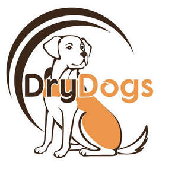
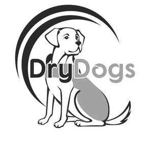

Trade Mark Journal No.2025/024 13 June 2025
UK00004212571 2 June 2025 (18,35)
Mark 1

Mark 2

- Class 18
- Harnesses; harness; leather for harnesses; animal harnesses; harnesses for animals; harness straps; straps (harness -); harness fittings; reins [harness]; harness for animals; harness made from leather; leather leashes; leashes (leather -); dog leashes; dog collars; dog collars made from leather; dog leads made from leather; raincoats for pet dogs; dog shoes; dog coats; dog clothing; dog parkas; dog bellybands; dog apparel; dog leads; clothing for dogs; animal leashes; coats for dogs; leashes for animals; collars for pets; pet clothing; dog harnesses; clothing for pets; clothing for domestic pets; pet leads.
- Class 35
- Wholesale and retail services in relation to harnesses, harness, leather for harnesses, animal harnesses, harnesses for animals, harness straps, straps (harness -), harness fittings, reins [harness], harness for animals, harness made from leather, leather leashes, leashes (leather -), dog leashes, dog collars, dog collars made from leather, dog leads made from leather, raincoats for pet dogs, dog shoes, dog coats, dog clothing, dog parkas, dog bellybands, dog apparel, dog leads, clothing for dogs, animal leashes, coats for dogs, leashes for animals, collars for pets, pet clothing, dog harnesses, clothing for pets, clothing for domestic pets, pet leads, toys for dogs, imitation bones being toys for dogs, pet toys, toys for pets, games for pets, playthings for pets, dog toys, toys for pet animals, snuffle mats being toys for pet animals, snuffle mats being toys for dogs, toy animals being toys for pets, plush toys being toys for pets, plush toys being toys for dogs, rope toys being toys for pets, rope toys being toys for dogs, toy animals being toys for dogs, squeezable squeaking toys being toys for pets, balls being toys for pets, squeezable squeaking toys being toys for dogs, balls being toys for dogs, shampoos and conditioners for pets, cosmetics for animals, pet shampoos, non-medicated pet shampoos, pet odor removers, deodorants for pets, wipes impregnated with cleaning products for cleaning pets, wipes impregnated with a skin cleanser for cleaning pets, shampoo for animals, shampoos for pets, pets (shampoos for -), shampoos for pets [non-medicated grooming preparations], combs for pets, combs for dogs, brushes for pets, brushes for dogs, dog beds, dog baskets, pet furniture, pet cushions, pet houses, bedding for dogs, pet beds, dog kennels, beds for animals, beds for pets, portable beds for pets, dog guards for use in vehicles, seat cushions, seat cushions for the seats of cars, vehicle seat covers, pet safety seats for use in vehicles, coverings for car seats, upholstery for vehicle seats, seat cushions for the seats of vehicles, loose seat covers [shaped] for vehicle seats, car seat covers [shaped or fitted], vehicle seat covers [fitted], fitted vehicle seat covers, vehicle seat covers [shaped], seat covers for vehicles, covers (seat -) for vehicles, covers for vehicle seats, harnesses (security -) for vehicle seats.
DRYDOGS LIMITED
Representative: Swindell & Pearson Limited